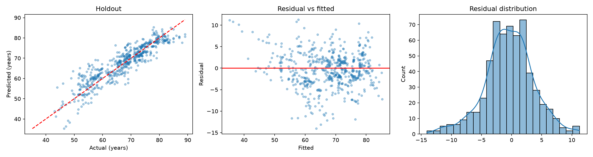

DATASET / 選擇資料集切換研究主題
WHO LIFE EXPECTANCY DATASET / 研究專題 02
數據背後，
看見生命的長度。
從健康、人口與社會經濟指標出發，透過多元線性回歸，探索國家平均餘命與生活條件之間的關聯。
資料來源 ↗01—16Life
in data.2000 — 2015
WORLD HEALTH DATA
in data.2000 — 2015
WORLD HEALTH DATA
● HUMAN WELLBEING
DATA FOR
BETTER QUESTIONS ↗
BETTER QUESTIONS ↗
✳
DATASET / 資料規模2,938筆
原始國家年度紀錄
COVERAGE / 研究範圍193國
涵蓋 2000–2015 年
FEATURES / 輸入特徵20項
健康、人口與社經指標
MODEL / 測試集 R²0.823
以未見國家進行評估
ANALYSIS / 分析流程
平均餘命的分析方法
以國家為分組單位，將 146 個國家用於訓練、37 個國家保留測試；訓練資料再進行五折分組交叉驗證。
在各訓練折中完成中位數補值與標準化，並比較完整 OLS、兩種 14 特徵選擇方法及正則化模型。
查看完整分析方法 ↗02 / THE FINDINGS
模型表現，
放在脈絡中理解。
以未參與訓練的國家資料評估。數字代表本次資料切分下的結果，不等同於因果關係。
MODEL PERFORMANCE
OLS · 主要模型20 特徵線性回歸
MAE / 平均絕對誤差3.121 年
RMSE / 均方根誤差4.063 年
R² / 決定係數0.823

測試集：37 個國家 · 592 筆國家年度紀錄 ↗
03 / TRY THE MODEL
親自試試，
看看模型怎麼估計。
以資料集中的一筆紀錄作為範例，調整數值後送出，瀏覽器將使用已訓練模型計算。
MODEL INPUT
國家年度指標
已填入資料集範例；未填的數值會依訓練資料中位數補值。
A NOTE ON THE RESEARCH
每一個數字背後，
都有值得繼續追問的故事。
以資料理解世界，也記得資料的邊界。探索完整分析流程、模型診斷與研究限制。
查看研究報告 ↗DATASET / 04Your
own data.UPLOAD · EXPLORE
MODEL · EVALUATE
own data.UPLOAD · EXPLORE
MODEL · EVALUATE
✳
ANALYSIS / 分析流程
從資料到模型結果
上傳 UTF-8 CSV → 選擇目標與特徵 → 以訓練集處理缺值及類別 → 建立線性回歸 → 評估獨立測試集。
隨機切分 80% 訓練、20% 測試（seed 42），並以訓練集進行五折交叉驗證。資料在瀏覽器內處理，不上傳至伺服器；首次使用需下載分析套件。
01 / YOUR DATA
選擇資料，
設定研究問題。
支援 UTF-8 CSV（逗號、分號或 Tab 分隔）、最多 8 MB、100,000 筆與 200 欄。第一列須為不重複的欄位名稱。
尚未選擇檔案。
選擇輸入特徵
至少選兩個；建議 14–20 個。請排除識別碼與預測時無法取得的資訊。
數值缺值採中位數，類別缺值採眾數；只以訓練資料擬合。
選擇資料集後，確認預測目標與特徵即可開始。
02 / MODEL RESULTS
檢視結果，
理解模型表現。
測試集未參與模型訓練。R² 越接近 1 通常越好，誤差越小越好。
HOLDOUT PERFORMANCE
OLS / 80:20獨立測試集 · 多元線性回歸
MAE
MSE
RMSE
R²
訓練集：MAE · MSE · RMSE · R²
隨機切分不適合所有情境；時間序列、同一個人或同一國家的重複紀錄，可能需要依時間或群組切分。類別欄位最多 100 種值，並以訓練資料建立獨熱編碼。